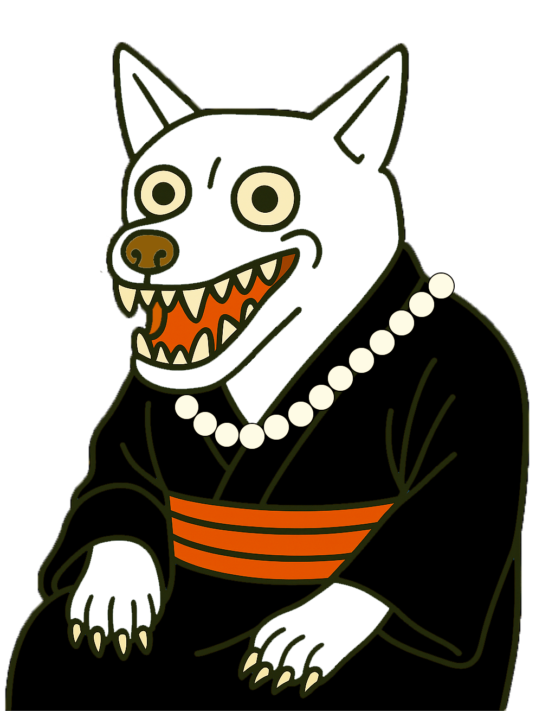

四国地方
犬神（いぬがみ）

四国に伝わる動物の妖怪。
小さな犬またはネズミのような姿で、犬神に憑（つ）かれると様々な病気や不調をきたすとされ、
奇妙な言動を繰り返すようになるとも言われている。
犬神憑きの家は、金銭的に裕福になるとも言われているが、同時に恐れられ、嫌われる存在でもあった。
強さレベル


子泣き爺

四国に伝わる妖怪。
老人の姿をしてるが、赤ん坊の泣き声を真似ることが得意。
抱き上げるとどんどん重くなり、しがみついて離れず、最終的に相手を押し潰してしまう。
水木しげるの漫画「ゲゲゲの鬼太郎」にも登場し、広く知られるようになった。
子泣き爺が泣くと翌日地震がおきるという都市伝説がある。
強さレベル